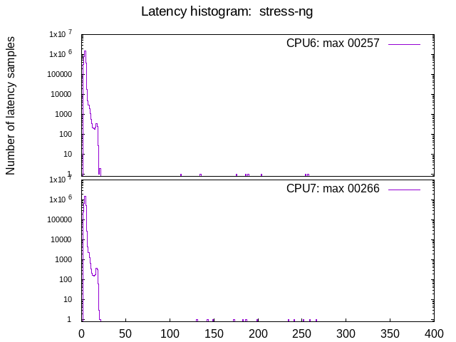

Latency tests: Yanling/Iwill N15 YL-KBRL2: GPU, isolcpus=izq
- Date: Thu, 10 Mar 2022 16:23:16 -0600
- Invocation: "./run_tests.sh" "-d" "600" "-1" "-o" "test_iwill_x_stress-ng" "Yanling/Iwill N15 YL-KBRL2: GPU, isolcpus=izq"
- cyclictest version: cyclictest V 2.30
- Test duration: 600 seconds
- Kernel commandline: BOOT_IMAGE=/vmlinuz-5.10.41-rt42-3.0.0.0 root=UUID=18ddffbe-fe92-48a5-9fae-04312dd3d393 ro usbcore.autosuspend=-1 intel_idle.max_cstate=1 efi=runtime rootflags=data=journal,commit=1,noatime isolcpus=6,7 nohz_full=6,7 irqaffinity=0-5
- CPU: Intel(R) Core(TM) i5-8250U CPU @ 1.60GHz
- Number of CPUs: 8
- Number of isolated CPUs: 2 (6,7)
- DMI info: dmi:bvnAmericanMegatrendsInc.:bvr5.12:bd09/11/2019:br5.12:svnYANLING:pnYL-KBRL2Series:pvrVer1.01:rvnYANLING:rnYL-KBRL2Series:rvrVer1.01:cvnDefaultstring:ct3:cvrDefaultstring:
- OS description: Linux Mint 20.1
- GPU: Mesa Intel(R) UHD Graphics 620 (KBL GT2) (0x5917)
- isolcpus=6,7
Test #01: stress-ng
